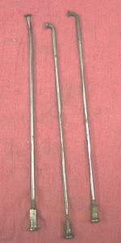
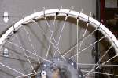
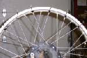

¶ I like Spoke Wheels. They just look good. But, unfortunately, it seems looks is as far as anyone ever goes with wire spoke wheels. They need regular maintenance, but seldom get it. The problem with spokes and nipples is that they do, over a period of time, get loose. Lots of times no one notices that they are loose till they fail. A quick, down and dirty way of testing them is to just tap them. A loose spoke will have a dull sound, while a tight spoke will have a hi pitched, tinkly sound. Go try tapping some spokes and you will see what I mean.
 If you have some loose spokes you will need to tighten them with a spoke wrench. Tighten the loose spoke until it has a nice ring to it. Now, you would think that all the spokes would need to have the same sound to have the same tightness, but this is not really true. Tap the spokes of a new bike with no miles on it and you will see they have different tones. New wheels are put together with nice new parts, special spoke torque wrenches, and people who actually know how to assemble wheels. I think we can safely assume that the new wheels are trued and torqued right, but the ones I've tried have different sounds. Very similar to be sure, but different. So I just tighten the loose ones till they have a nice ring to them, and leave it at that.
If you have some loose spokes you will need to tighten them with a spoke wrench. Tighten the loose spoke until it has a nice ring to it. Now, you would think that all the spokes would need to have the same sound to have the same tightness, but this is not really true. Tap the spokes of a new bike with no miles on it and you will see they have different tones. New wheels are put together with nice new parts, special spoke torque wrenches, and people who actually know how to assemble wheels. I think we can safely assume that the new wheels are trued and torqued right, but the ones I've tried have different sounds. Very similar to be sure, but different. So I just tighten the loose ones till they have a nice ring to them, and leave it at that.
Sometimes we find a spoke has broken. Depending on which spoke has broken, you may be able to replace it. If not, you can tape or wire it to another spoke, or cut it out. I leave the old nipple in to fill the hole in the rim. Lots of dirt racers wire spokes together where they cross so if one breaks it will not wrap or flail around the wheel. One broken spoke is usually not much of a problem. Two is not so good, but as long as they are not close together you should be OK. Three means you had better deal with things real soon and if they are close together the wheel could fail very suddenly.
So, we find our wheel has a bunch of broken spokes or a broken hub and things are not going well. We have several choices.
- Get a new wheel assembly. This is very expensive. I would do this only if the bike is very new and the wheel really trashed.
- Replace the broken spokes, rim, and/or hub. Then relace and true the wheel. This would seem to be the best way except for a couple of things.
- The spoke nipples, on older bikes, often get rusted so tight to the spoke you can't get them off without cutting the spoke.
- The spoke nipples, on a high performance bike, can stretch the threads on the nipple and spoke. This can lock them together. This, in turn makes you cut all the spokes off. The spoke and nipple sets for some bikes only cost $30.00, which is not too bad. However, I know at least one high performance dirt racer who's spokes cost almost $200.00 for the set.
- Get a used wheel. If you have an older bike, I think the best plan is to look for a used wheel at a motorcycle salvage yard. Check both the spokes, and the truing of the wheel before you buy the wheel and plan to replace the wheel bearings. The cost of the used wheel will be a lot less than going any other way.

 OK, we looked for a new wheel and found nothing. So we got a new rim or hub, got all our spoke nipples loosened, and are ready to do it to it. Now this is how I do it. I don't do very many wheels so I find this way to work best for me. I tie each pair of spokes (Right and left sides together) together with some wire. I then take all the nipples off the spokes. I then take the rim off the spokes. I then cut the wire on one of the spoke pairs and remove the two spokes. Then I put them into the new hub, or replace them with new ones. I do this 'cuse I aren't too smart. I get confused easily. There can be as many as four different types of spokes on a wheel with a conical hub. Two different types of spoke ends and two different lengths. Most times there are just two different spoke types per wheel. I keep changing spoke pairs and rewiring them together till all the parts are replaced. If you are doing a lot of wheels and they are all the same, you will not have to do this. It will become second nature to you. But if you are only doing one wheel, this method will save you time and aggravation.
OK, we looked for a new wheel and found nothing. So we got a new rim or hub, got all our spoke nipples loosened, and are ready to do it to it. Now this is how I do it. I don't do very many wheels so I find this way to work best for me. I tie each pair of spokes (Right and left sides together) together with some wire. I then take all the nipples off the spokes. I then take the rim off the spokes. I then cut the wire on one of the spoke pairs and remove the two spokes. Then I put them into the new hub, or replace them with new ones. I do this 'cuse I aren't too smart. I get confused easily. There can be as many as four different types of spokes on a wheel with a conical hub. Two different types of spoke ends and two different lengths. Most times there are just two different spoke types per wheel. I keep changing spoke pairs and rewiring them together till all the parts are replaced. If you are doing a lot of wheels and they are all the same, you will not have to do this. It will become second nature to you. But if you are only doing one wheel, this method will save you time and aggravation.

 Set the dial indicator point on the side of the rim, and spin the wheel. Pick the point of the rim that moves furthest to the right. Again tighten the nipple on the (call it #1) spoke at that point, however, make sure that that spoke (#1) goes to the opposite side of the hub. Now tighten every other spoke (#s 2,3,4), ahead and behind of that spoke (#1), decreasing the amount of the tightening on each spoke as you get further away from the first (#1) spoke. Make sure all the spokes you tighten go to the left side of the hub. This will pull the rim to the left. Spin the wheel again, find the high spot, or rather high side spot, and do it all again. You will need to keep measuring side play and out of roundness, back and forth, as you tighten the nipples. Also, remember to keep the rim centered in relationship to the swingarm or front fork tubes, depending on whether you are doing a rear or front wheel. When I say turn the #1 spoke on either side play or out-of-round one turn I don't necessarily mean one turn. Use your head. You may need to turn it several turns OR only a half or quarter turn. Same with each of the other spokes before and after the #1 spoke. Turn them in proportion to the amount you turned the #1 spoke. Each one a little less than the one before it. #1 one turn, #2 half turn, #3 quarter turn, #4 one eighth turn, ETC. In some instances you might have to loosen or tighten the spoke nipples on the opposite side of the wheel to the ones you are working on, too.
Set the dial indicator point on the side of the rim, and spin the wheel. Pick the point of the rim that moves furthest to the right. Again tighten the nipple on the (call it #1) spoke at that point, however, make sure that that spoke (#1) goes to the opposite side of the hub. Now tighten every other spoke (#s 2,3,4), ahead and behind of that spoke (#1), decreasing the amount of the tightening on each spoke as you get further away from the first (#1) spoke. Make sure all the spokes you tighten go to the left side of the hub. This will pull the rim to the left. Spin the wheel again, find the high spot, or rather high side spot, and do it all again. You will need to keep measuring side play and out of roundness, back and forth, as you tighten the nipples. Also, remember to keep the rim centered in relationship to the swingarm or front fork tubes, depending on whether you are doing a rear or front wheel. When I say turn the #1 spoke on either side play or out-of-round one turn I don't necessarily mean one turn. Use your head. You may need to turn it several turns OR only a half or quarter turn. Same with each of the other spokes before and after the #1 spoke. Turn them in proportion to the amount you turned the #1 spoke. Each one a little less than the one before it. #1 one turn, #2 half turn, #3 quarter turn, #4 one eighth turn, ETC. In some instances you might have to loosen or tighten the spoke nipples on the opposite side of the wheel to the ones you are working on, too.
Got it? If you don't completely understand, reread the above till you do. Do it wrong and with each adjustment things will get further and further out of kilter. If things start going wrong, STOP. Try doing the OPPOSITE of what you were doing. If things are still going wrong, loosen all the spokes up and start over. DON'T just keep tightening things up and further out of whack. You can really bend up a rim by being bull headed and just driving on no matter what.
Take note, you may have to go back and loosen the nipples or tighten the nipples to get the rim to move into the right position. You may have to experiment a bit, before everything starts to come together. Go SLOW. Lots and lots of small adjustments is the trick.
You will want to have the rim centered, trued, and round before you get the spoke nipples real tight. This means no more that two, onehunderedths (2/100") of an inch out of true, both side and out of round. Doing it better than that would not hurt anything, especially if you like going fast. Faster you go, the truer it needs to be. Once this is done, tighten up all the spokes about half a turn at a time. Keeping a sharp eye on all three things, center alignment, side movement and out-of-roundness, tighten the spokes till they make a nice crisp sound. If you happen to have a spoke torque wrench, use it now to set the right torque. Check everything one last time ands make sure the spokes do not protrude through the nipple, possibly putting a hole in the tube. If they stick through, grind them down.
Remember, this is the trick. If you want to get this done right and as quick as possible, GO SLOW. Try to do this fast and you will just screw things up and it will take forever to get it right. Lots of little, tiny adjustments. Hundreds of them. That's the way to go.

 |
 |
Copyright © 1999-2003 dansmc.com. All rights reserved.